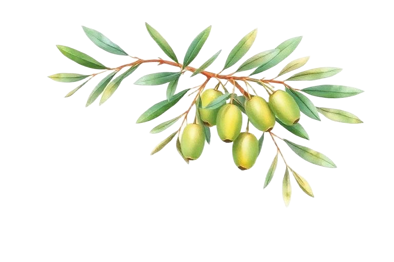
Раз ты это читаешь — значит, без тебя наш день просто не состоится. Мы не просто женимся: мы устраиваем большой солнечный праздник в самом вкусном месте на карте — в Апулии! Там, где лимоны растут прямо над головой, оливки повсюду, а бокалы с вином никто не считает.
Прилетай с пустым желудком и открытым сердцем. Будем обниматься, смеяться и танцевать до тех пор, пока не закончатся звёзды. Ну, или вино. Очень ждём тебя!
Случайность, нарушенные планы и одно «Да!» на закате Амальфи
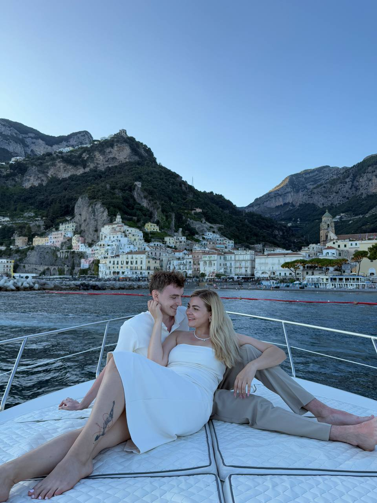
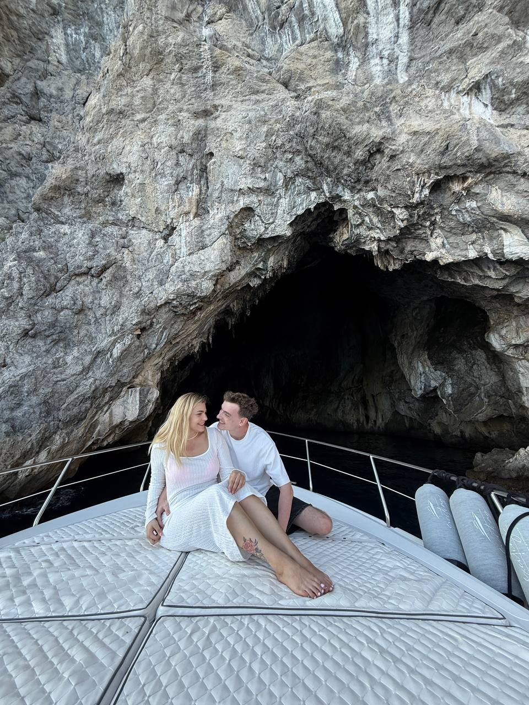
Их история началась с абсолютной случайности и полностью нарушенных планов. Переехав в новый ЖК всего на три месяца, Вика мечтала о путешествиях на Бали и в Испанию, даже не подозревая, что главная встреча в её жизни случится прямо здесь. В один из вечеров она опоздала на игру в настолки и застала в коворкинге лишь организатора и Диму — загадочного парня в чёрном, с пирсингом и необычными украшениями.
Дима сразу заинтриговал её своей неординарностью. Ночные разговоры, караоке до утра вместе с новым другом Стефаном и весёлые прогулки быстро сблизили ребят. Искрой, разжёгшей чувства, стали забытые в куртке Димы шапка и перчатки. Парень вернул их, «добровольно-принудительно» зайдя в гости, а через пару дней уже Вика пришла к нему на просмотр аниме.
В уютной атмосфере за чашкой чая Дима спросил, какой у неё парфюм, и в ответ на слово «Armani» случился их первый, самый долгожданный поцелуй.
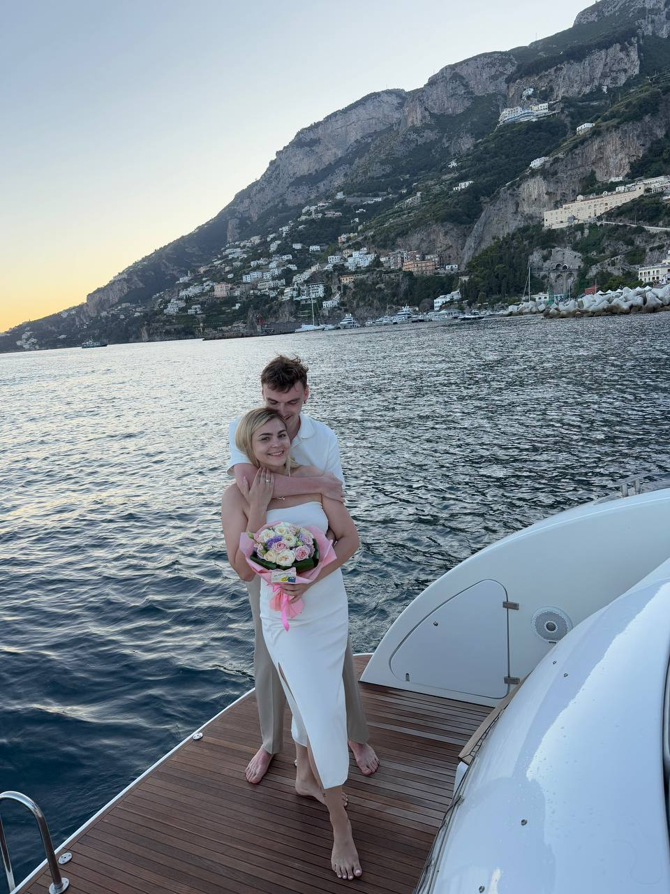
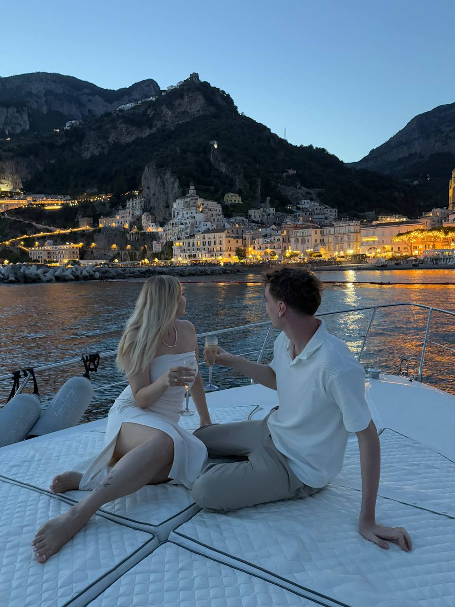
Время шло, и в начале 2025 года Дима решил превратить эту сказку в новую главу их жизни. Найти идеальный камень и изготовителя помогла его мама — ювелирный специалист, а вот узнать размер пальца Вики оказалось настоящим квестом. Помог случай: Вика примерила кольцо Димы, и оно подошло — так секрет был раскрыт.
Сюрприз Дима задумал грандиозный: романтические выходные в Италии, роскошный кабриолет и аренда красивой лодки на закате с маршрутом до Амальфитанского побережья. В самый ответственный момент на яхте кольцо чуть было не выскользнуло из кармана, но удача была на стороне влюблённых.
Вика ничего не заметила, Дима вовремя поймал драгоценность и сделал то самое заветное предложение. Вика ответила «Да!» — и теперь эта пара счастлива пригласить вас разделить с ними главный день начала их семьи.
Точное время начала церемонии сообщим позже, когда спадёт полуденная жара и мы сможем обнять вас без риска растаять. Закладывайте на Апулию хотя бы пару дней: одним вечером тут не обойтись. Вилла забронирована до вторника — кто захочет, может остаться и подольше понежиться под южным солнцем.
Настоящий итальянский палаццо под Бриндизи: каменные стены, тенистый внутренний двор, оливы и тот самый южный воздух, в котором даже самые серьёзные гости начинают улыбаться. Здесь, в сердце Апулии, пройдёт наша церемония и весь вечер. Вокруг — солнце, море и виноградники, внутри — мы, наши близкие и еда, о которой вы будете вспоминать ещё очень долго. Единственный риск: вам не захочется уезжать.
Совет: рассматривайте зону Duty Free не как магазин, а как обязательную демо-версию нашего свадебного банкета. Но помните: в самолёт нужно зайти на своих двоих, иначе праздника не получится (по крайней мере, для вас).
Мы за лёгкость и палитру итальянского лета. Несколько ориентиров — а дальше доверяем вашему вкусу.
Лёгкие летние платья любой длины. Выбирайте из этих оттенков:
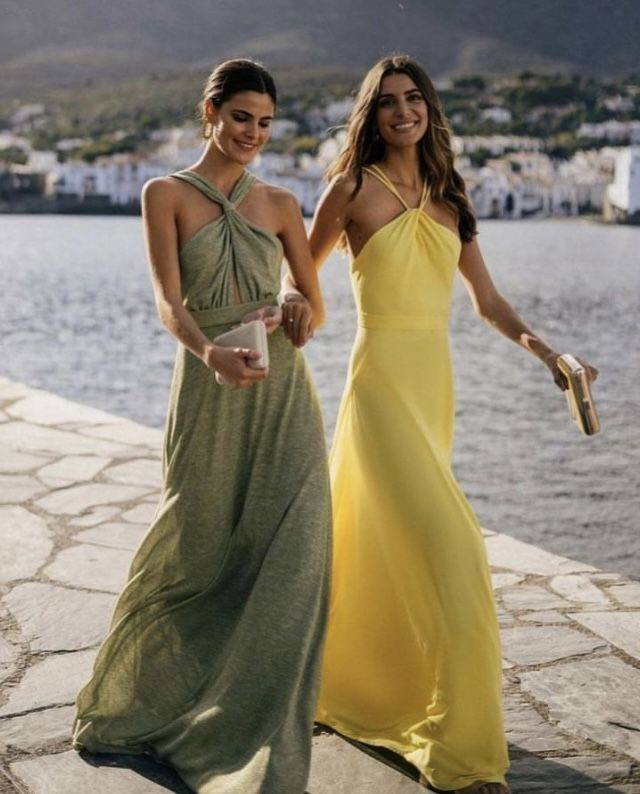
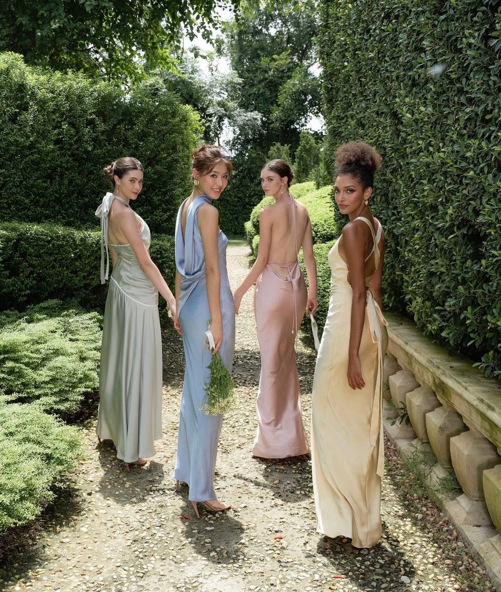
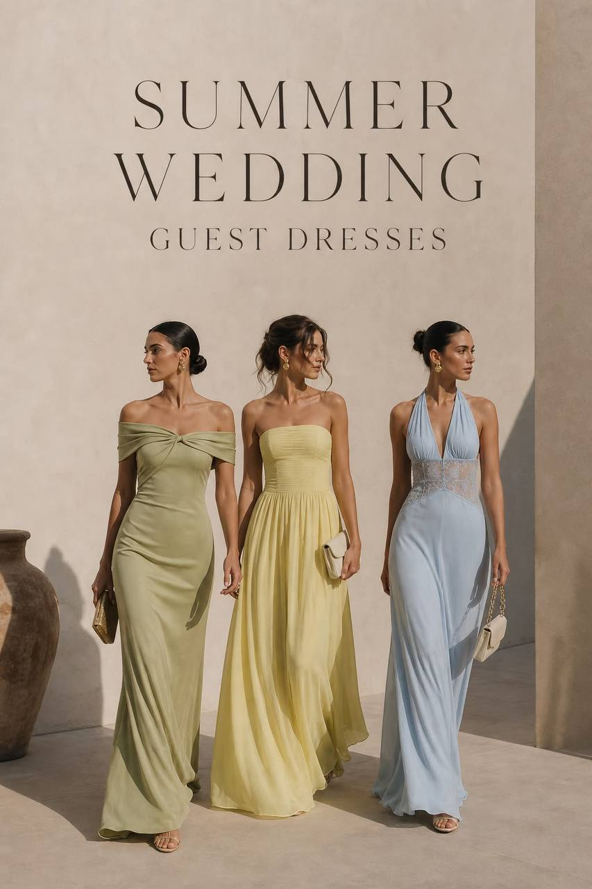
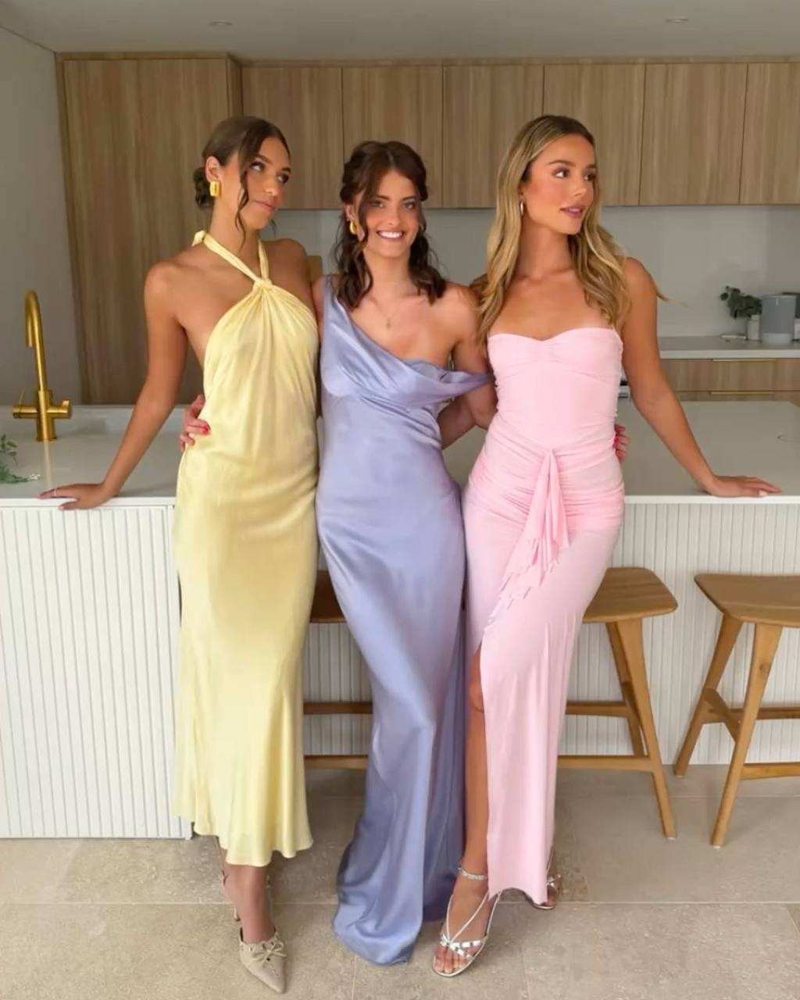
Приходить в белом платье разрешено только Виктории. Если вы мужчина и придёте в белом платье — что ж, это будет смело, но Дима вас не поймёт.
Лён и лёгкость. Рубашка или поло, льняные брюки, лоферы или сандалии.
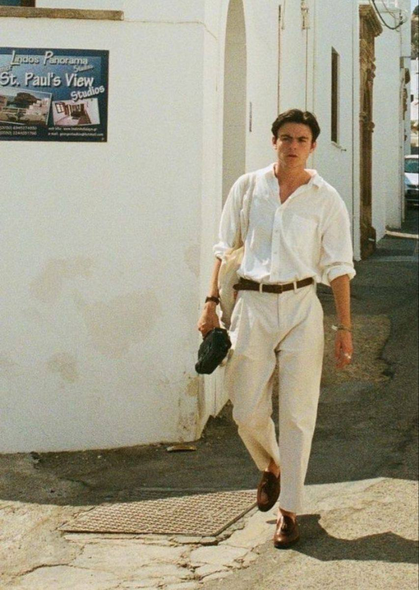
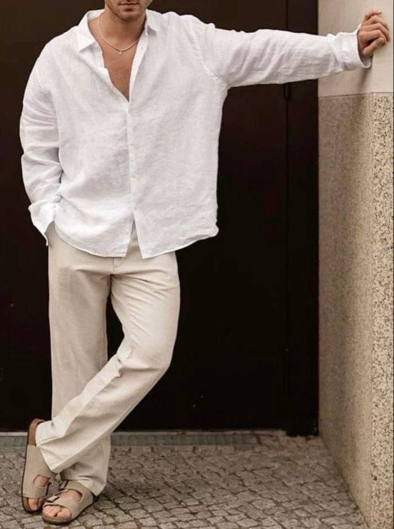
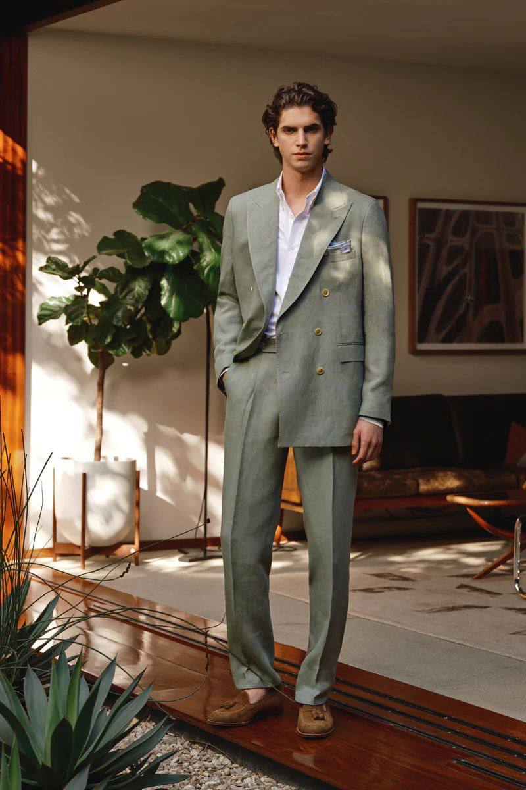
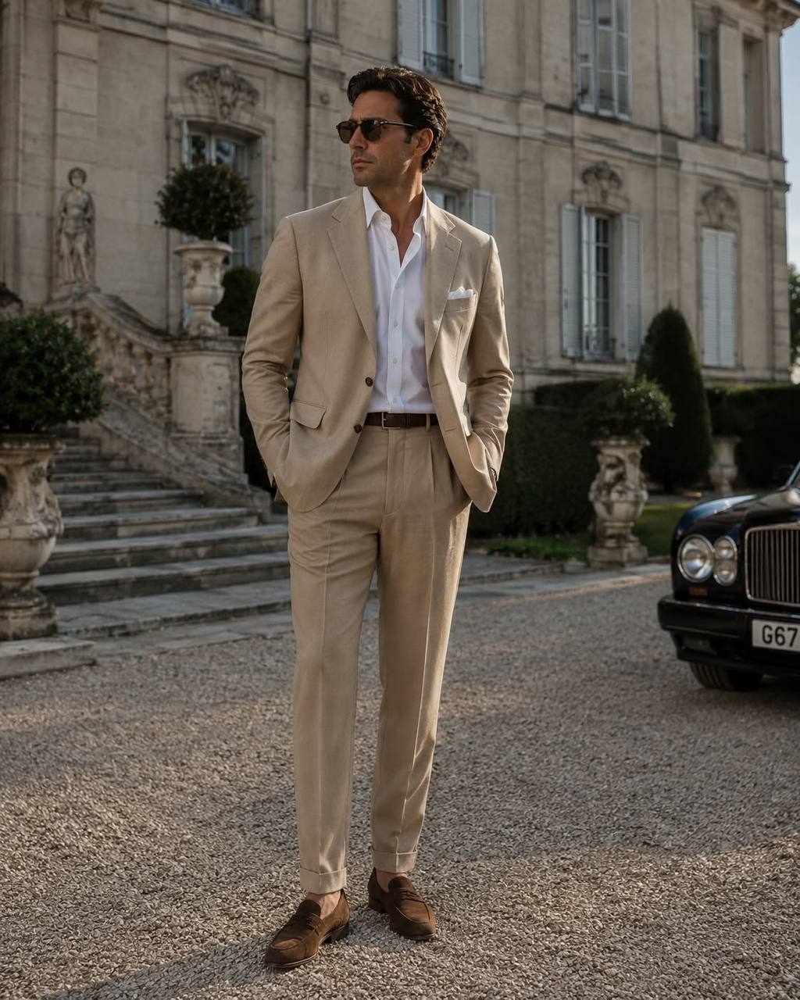
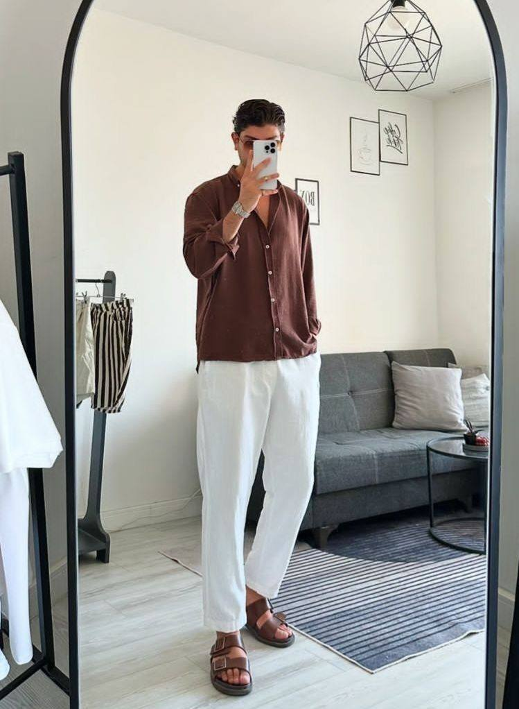
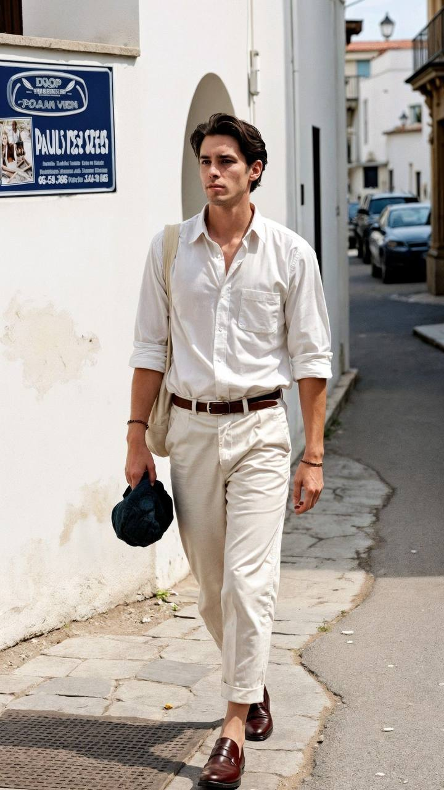
Одевайтесь так, будто вас прямо со свадьбы могут забрать на допрос в итальянскую мафию.